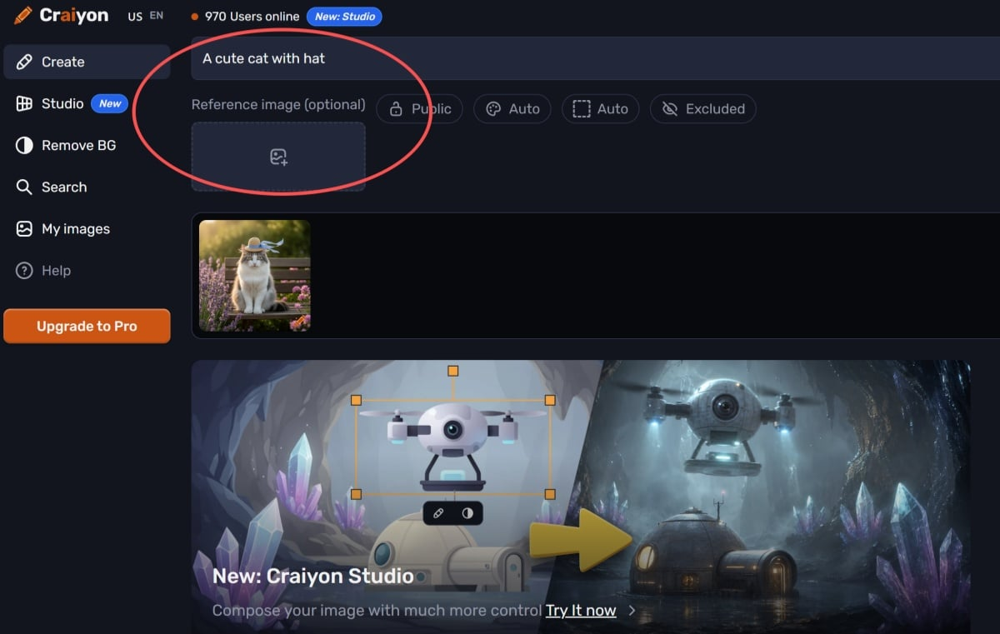
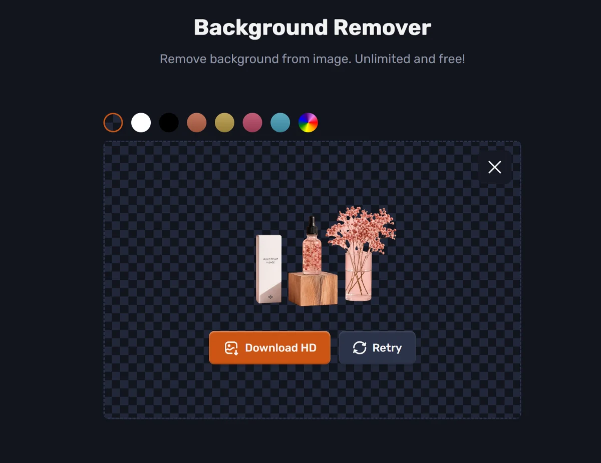

Craiyon 深度对比评测：免费无限次的 AI 绘画工具，值不值得用？
把 Craiyon 放进 AI 图像生成工具的坐标系里——它靠免费无限次、零门槛和恶搞定位站稳脚跟，但画质和精度短板明显。本文从差异化优势、取舍代价到选购结论，帮你判断它是不是适合你的那一个。
AI 图像生成这个赛道已经拥挤到不能再挤了——Midjourney、DALL·E 3、Stable Diffusion、Flux……每个月都有新模型冒出来。在这场军备竞赛里，Craiyon 是个很有意思的异类——它的官网不用登录、直接开刷。它不是画质最好的，不是功能最强的，但免费版无限次生成、直接下载也行、连登录都不用，这几条放在一起，就让它在"快速创意探索"这个细分场景里占住了一块位置。
它和同类工具的格局
如果用一张图来排市面上主流 AI 绘画工具的位置，横轴是画质/精度，纵轴是使用门槛（越高越复杂），那 Craiyon 显然落在"低门槛 + 基础画质"象限里。
Midjourney 和 DALL·E 3 在画质上遥遥领先，连 ChatGPT 免费版每天 2 张的 DALL·E 3 画质都比 Craiyon 付费版好。Stable Diffusion 和 Flux 则走另一条路——本地部署、完全免费、可定制，但门槛高得劝退普通用户。Craiyon 卡在中间那个尴尬但又有独特价值的位置：比 Midjourney/DALL·E 3 便宜到近乎白送，比 Stable Diffusion 简单到不用装任何东西。

Craiyon 的三个差异化优势
真·无限次，别小看这一点
ChatGPT 免费版 DALL·E 3 每天只有 2 张额度，Midjourney 最低 $10/月也才每月大约 200 张，Stable Diffusion 虽然本地无限但需要显卡。Craiyon 免费版是真的——无限次，没额度，没登录，打开就刷。
这个优势在"快速探索大量创意"的场景下特别明显。比如你想试试 30 个不同的 prompt 方向，用别的工具可能一天就把额度用光了，或者等本地模型排队半小时，Craiyon 让你直接刷，一个个试，哪个对胃口了再留着精修。
恶搞文化和社区属性
Craiyon 的界面和社区氛围天生就不"严肃"。公共画廊里刷一圈，大部分是玩梗图、恶搞合成、各种"AI 生成了什么鬼东西"的探索。这种氛围反过来又吸引了喜欢恶搞的用户，形成了一个有意思的文化圈。
对比之下，DALL·E 3 太"正经"了，生成出来的东西总带着一股"高质量商用素材"的味儿；Midjourney 的社区也偏审美驱动。如果你就是想玩、想刷、想看看 AI 能吐出什么离谱的东西，Craiyon 这股"不正经"的劲儿反而成了卖点。
Studio 模式：零门槛构图控制
2025 年推出的 Studio 模式是 Craiyon 往"精确控制"方向走的重要一步。上传一张参考图作为构图模板，然后用文字描述"在这个布局下生成什么内容"，模型会尝试保留参考图的构图只替换内容。

虽然它还比不了 Stable Diffusion 的 ControlNet（姿态控制、边缘控制、深度图这些都是 Studio 覆盖不到的），但 Studio 零门槛——不用学 ControlNet，不用装插件，上传一张草图或者电影截图就能玩。对那些想"大概控制一下构图但不想折腾"的用户来说，Studio 是当前最简单的方案，详细的构图技巧和 prompt 策略可以翻Craiyon文档慢慢研究。
为这些优势付出的代价
画质是硬伤
Craiyon 的模型规模可能不到 DALL·E 3 的十分之一，训练数据质量也天差地别。人像手部畸形、解剖学错误、面部扭曲这些问题在免费版上尤为突出，付费版虽有改善但仍然明显 wonky。和 DALL·E 3 对同一 prompt 的对比测试显示，ChatGPT 免费版每天 2 张额度的 DALL·E 3 画质已经超过了 Craiyon Professional 每月 $24 的订阅。
文字生成更是 Craiyon 完全做不到的事——prompt 里提到的文字会被渲染成一团乱码。DALL·E 3 在这方面已经能生成可读的文字了，虽然还不算完美。
隐私代价：免费版图像强制公开
Craiyon 的隐私策略是产品设计的一部分，不是漏洞。免费版用户生成的所有图像默认、强制进入 Craiyon 的公共画廊，任何人都可以搜索、浏览、复制你的图像和对应的 prompt。付费版可以选 Private 模式私藏，但 $5/月的 Supporter 和 $24/月的 Professional 才有这个选项。
这意味着如果你用免费版生成了商业草稿、包含个人隐私的内容、或者还没发布的营销素材，它们会被公开暴露。对于纯玩梗无所谓，但稍微正经点的内容就要考虑付费或者换工具了。
没有官方 API
Craiyon 截至 2026 年没有官方 API。虽然有第三方开发者做了非官方的封装库，但这些可能违反服务条款、随时可能因为 Craiyon 更新而失效，还存在被封号的风险。如果你需要程序化调用 AI 图像生成，Midjourney API、Replicate.com 或者本地部署的 Stable Diffusion 才是正经选择。
选购结论
什么样的人适合用 Craiyon？什么样的人应该直接跳过？
选 Craiyon 的情况：
- 你就是想快速、海量、免费地刷创意，额度比画质更重要
- 你喜欢恶搞、玩梗，Craiyon 的社区氛围比严肃的 AI 绘画工具对你更有吸引力
- 你不想注册账号、不想装任何东西、不想留下身份痕迹，打开浏览器就能用最重要
- 你想试试构图控制但不想折腾 ControlNet，Studio 模式的零门槛构图约束够用
直接跳过 Craiyon 的情况：
- 你需要高质量图像，人像、手部、文字这些细节不能出错——DALL·E 3 免费版画质都比 Craiyon Professional 好
- 你已经在付 ChatGPT Plus 了，那 $20/月的订阅里自带 DALL·E 3，比 Craiyon Professional 强得多，没必要再花 $24/月重复付费
- 你需要程序化调用或商业商用，没官方 API 是硬伤，隐私策略也不友好
- 你在意隐私，免费版强制公开画廊的代价接受不了
总的来说，Craiyon 不是一个"全面"的 AI 绘画工具——它在画质、精度、隐私、商用支持上都有明显短板。但它在"免费无限次 + 零门槛 + 恶搞文化"这条窄赛道上做得足够独特。如果你要的就是刷量和玩，那它就是最合适的；如果你要的是质量和专业，还是直接上 DALL·E 3、Midjourney 或者 Stable Diffusion 吧。顺手提一句，我整理的这套资料在三个仓库都能拿到：主仓库在 GitHub，国内用户如果访问不稳定可以直接去 Gitee 或 GitCode 看。